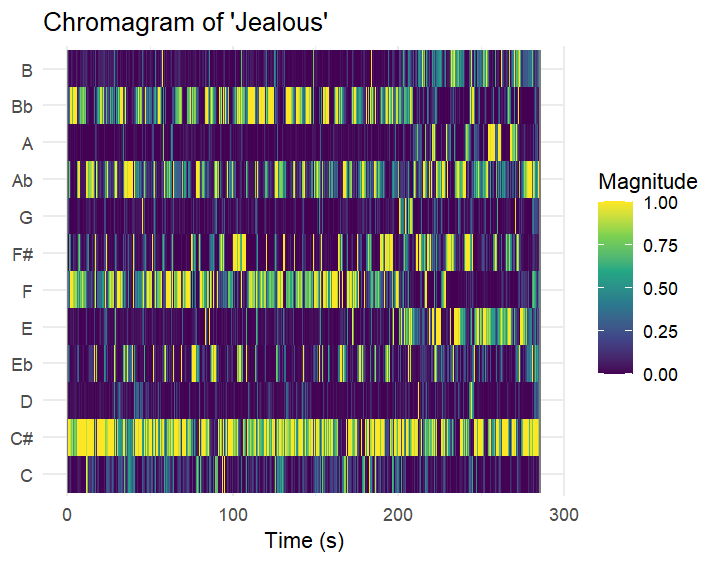
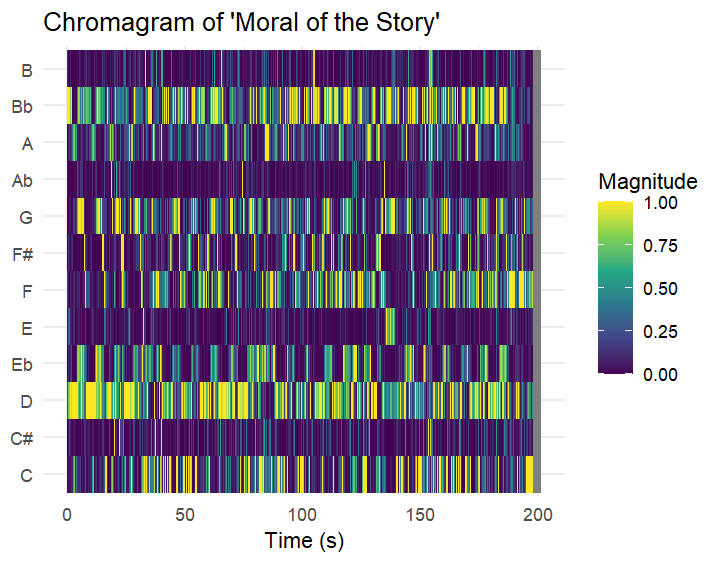
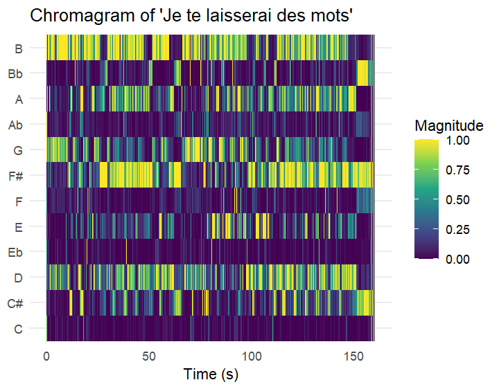
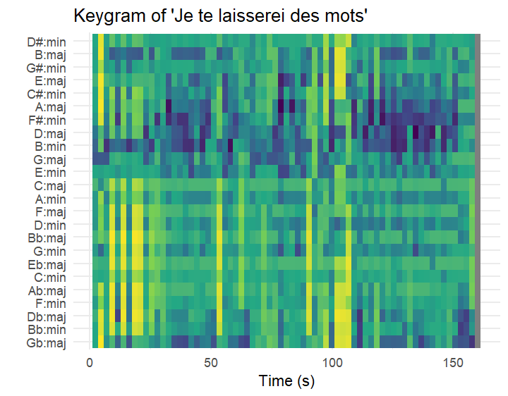
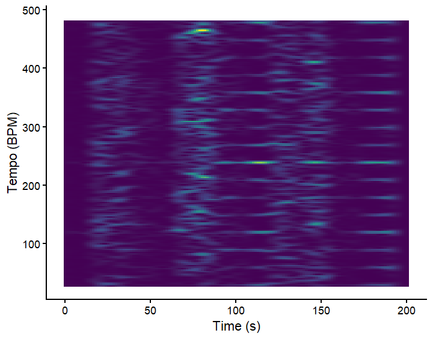
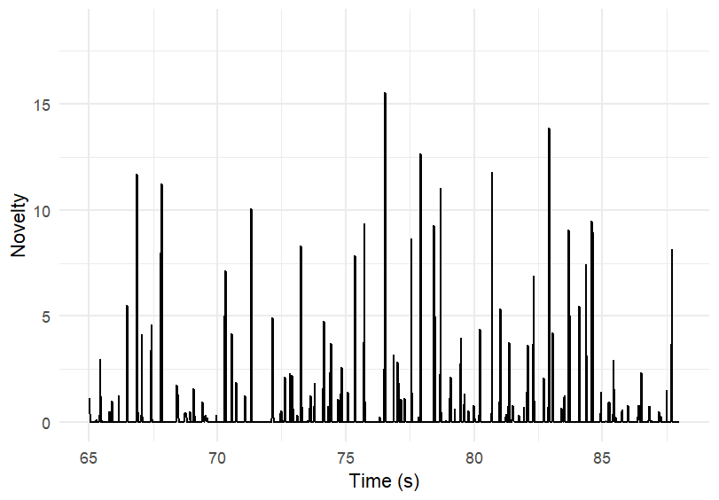
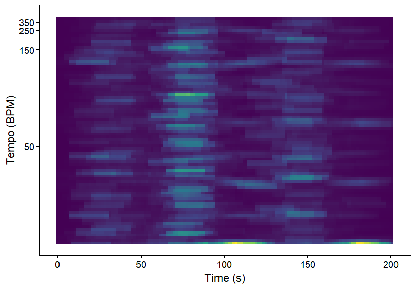
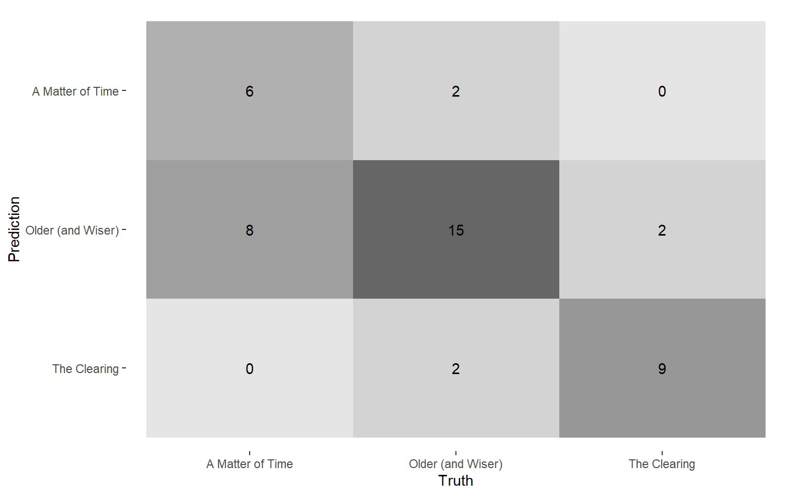
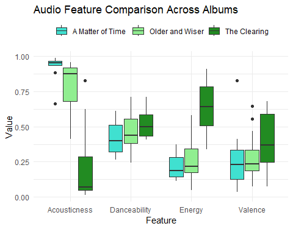
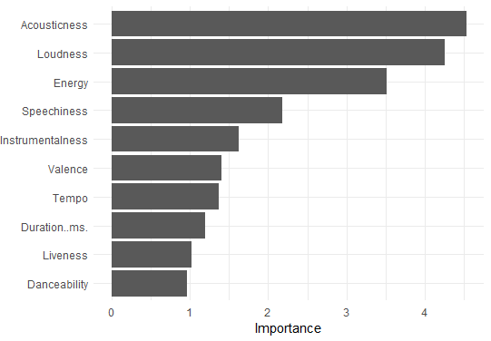

In the past year, I have been to 3 concerts. I choose to go to concerts of only those artists whose sound I like a lot. This is a comparison of the 3 artists whose concert I saw, and the albums they toured with.
I chose the songs which I enjoyed listening to the most in the concert.
With this corpus, my purpose is to investigate how similar or different my tastes are in regards to who I want to see in concert. I want to identify whether there are common features which may draw me to these albums.

Jealous is a stripped down simple song with only one voice and a piano. The major piano chords in jealous are Db (C#), Gb (F#), Ab and Bb. All these can be easily seen in the chromagram.

Moral of the story is full with many harmonies and multiple instruments, and seemingly heavy production. As is to be expected, we can see more notes highlighted as was expected due to there being many harmonies and instruments.

Similar to Jealous, this song is more simple, it has piano, one voice and a string section which occasionally is played. We can see the key chords throught the entire song very clearly.

As can be seen in the keygram, the tonal centre is G major which can be seen as the most dark blue part in the image. Other keys such as D major and Bm are also quite dark in colour as they are close to G major in the circle of fifths.
Since this song is a relatively simple song, it makes sense that the tonal centre seems to stay around the same keys and no key change can be seen.
Except for one area around 100 seconds where there is a slight gap in the dark blue, which is also around the time the string section is introduced into the song, so that could explain a slight break in the keygram.

This is the fourier tempogram for ‘Moral of the Story’ by Ashe. It is not a very clear picture. In the areas where this is almost a criss-cross pattern, in those parts of the song, she is almost speaking-singing. I believe the software is unable to pick up the tempo due to that reason. However, in the more instrumental and actual singing parts, we can see clear lines of the tempo (and even the different tempo harmonics).

This is the novelty function of ‘Moral of the Story’ by Ashe. In between seconds 65 and 90, there was a lot of activity in the novelty function. If you see the fourier tempogram, this is around the second block of the criss-cross pattern. This is when she is almost speaking, which is why the software isn’t able to pick up the tempo.

The autocorrelation tempogram is not very clear. This is because the autocorrelation tempogram reads the rhythmic self-similarity. Throughout the song there is a lot of different instruments, harmonies and different styles of singing as well. I believe due to this diversity, this tempgram is unclear.
Based on the albums, I expect ‘A Matter of Time’ and ‘Older (and Wiser)’ to be harder to tell apart, this can also be seen in the box plot on the next page. They are both more acoustic, similar in energy and in other features as well. In contrast, ‘The Clearing’ is more different than the other albums.
# A tibble: 3 × 3
class precision recall
<fct> <dbl> <dbl>
1 A Matter of Time 0.75 0.429
2 Older (and Wiser) 0.6 0.789
3 The Clearing 0.818 0.818
From these numbers, we can see that indeed it was hardest for Random Forest to be able to classify ‘A matter of time’ and easiest for ‘The Clearing’.

This is the box plot from the week 1 assignment. I chose these 4 features according to my perception of these albums & what I believe would give me good inference for my corpus. ‘The clearing’ is a soft rock album, with more energy, which may lead one to believe it’s more danceable. However, we can see it is not. Similarly, one can interpret the other 2 albums as well.
On this basis, I expected energy and acousticness to have the most weight in classifying the albums.

After doing the feature ranking, we can see that is true. I also got a new finding: ‘Loudness’ plays a really big role. After further analysis, this result does make sense, as ‘The Clearing’ has a mean -5.882 loudness. ‘Older’ has -11.368 and ‘A Matter of Time’ has -9.559. However, this is a result which I would have not expected by listening to the respective albums. While the vocals do noticeably differ in loudness, all three albums have backing tracks which mostly include a full band. This leads me to believe that the loudness feature of spotify may also be effected by perhaps the energy or tempo of the albums.